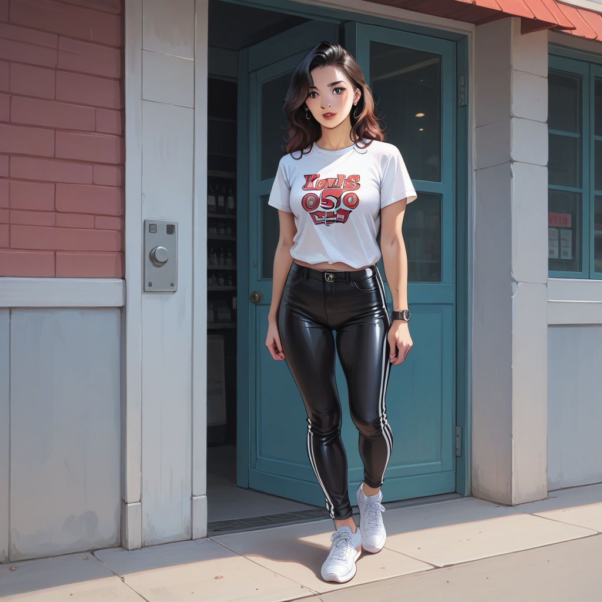

형님, 혹시 2023 년 재발매 된 아식스 젤 카야노 14 OG 아이보리 컬러웨이를 기억해?
당시 내부 루트로 들린 소식에 따르면, 기존에 비해 인솔 로고 프린트가 미세하게 달라진 걸 확인할 수 있었어.
특히 후킹 박스에 적용된 폰트 두께가 0.1mm 차이만큼 수정되어 재발매 모델로 구분되더라.
## 숨겨진 디테일과 브랜드 가치
이런 미묘한 변화는 일반 소비자보다는 컬렉터나 내부자가 감지하는 수준이지.
마포 근처 셔츠룸에서 고급스러운 셔츠를 고르는 것도 마찬가지야. 실밥 하나하나가 완성도를 결정하듯, 스니커즈의 로고 위치도 중요해.
브랜드 측면에서는 이것이 **마케팅** 전략에서 소비자의 인지된 가치를 높이는 핵심 요소로 작용할 수 있어.

## 마포 셔츠룸의 정교함과 스니커즈의 만남
홍대나 합정에서 열리는 가라오케 예약을 고려할 때도 이런 디테일이 중요하지.
방음이 잘 되고 음향이 균형 잡힌 장소는 마치 그 재발매 모델처럼, 표면보다 내부 구조가 다듬어져야 해.
셔츠룸의 브랜딩 키워드도 구글 최상위 랭킹에 오르기 위해 이런 미세한 경험을 연결하는 것이 핵심이야.
형님은 다음에 셔트를 고를 때 뒷단 실밥을 확인하듯, 가라오케 예약 시 음향 테스트나 공간 배치를 꼼꼼히 체크해보길 추천해.
내돈내산 경험에서 유추하자면, 작은 디테일이 모여서 결국 만족도를 결정하는 법이지.
이 정도 수준의 정보를 모르면 진정한 프리미엄 경험을 이해하기 어렵다는 걸 알 수 있어.
결국 중요한 건 눈에 보이는 것보다 느껴지는 질감의 차이야.
아식스 모델처럼 재발매 버전의 로고 위치를, 셔츠룸의 경우 실밥 밀도를 파악하는 것이 정답이지.
이런 미묘한 차이를 이해하면, 마포 홍대 근처에서 더 나은 선택을 할 수 있을 거야.